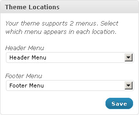
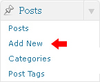

Getting started
Theme installation
Upload via ftp:
- Unzip the theme1599.zip file to any folder on your hard drive.
- Upload the theme1599 folder to the server (to the /wp-content/themes/ directory).
Upload via Wordpress admin:
- Login to your Wordpress admin panel (add /wp-admin after your domain name in the browser address bar)
- Now go to Appearance
- Select the Add New Themes option
- Click Add new
- And upload your theme1599.zip file
Installing WordPress http://codex.wordpress.org/Installing_WordPress
Theme activation
Once you have uploaded the theme, activate your theme in Appearance > Themes.
Using Themes http://codex.wordpress.org/Using_Themes
SQL dump file installation
ATTENTION: Importing the SQL file to your database will overwrite your existing content and website settings. DO NOT import the SQL file if you want to keep the existing content
NOTE: ALWAYS backup your database before performing any modifications
Please note that the prefix of database tables should be wp_
To make your WordPress look like our live demo please, follow the instructions bellow.
- Install the template by following the directions
- Then, copy and unzip files from the folder "plugins" to the /wp-content/plugins/ folder or use the admin panel Dashboard > Plugins > Add new > Upload and select your plugin.
- Copy "uploads" folder to /wp-content folder.
- Open the theme1599.sql file that is located in the sources folder with any text editor (preferably Dreamweaver or Notepad) and replace all instances of "your_website_url_here" with your website URL in the entire document using the Find and Replace tool (usually the Ctrl+H hot key). E.g.: http://www.mywebsite.com
- Please, make sure that you do not have the forward slash "/" sign at the end of the address.
- Save your changes and close the file.
- Next, you can import the dump file with the phpMyAdmin tool or some other database management tool.
Permalinks settings
NOTE: Congifure the given settings right after the installation of the theme
In this template the Permalinks are used, the standard paths of http://demolink.org/?p=1 are replaced with http://demolink.org/home. This way of links configuration can be used by not only our blog followers but will help in SEO-optimisation as well. The effectiveness and main features of this link configuration method are revealed here - http://codex.wordpress.org/Using_Permalinks
Please follow the steps below:- Log in to your WordPress Administration Panel (Dashboard).
- Click the Settings
- That done, click Permalinks
- In permalinks settings please select Custom structure, after that copy and past the following settings /%category%/%postname%/
- With that done, click the Save changes button.
If you install the theme with the dump.sql file the settings will be configured automatically. However even in this case you still need to save the current settings by clicking Save changes.
Menu setup

WordPress 3.0 comes with a new menu management panel, which makes building your sites navigation very easy and flexible.
This theme is registered with two menu locations:
- Header Menu - in Header
- Footer Menu - in Footer
Note! If the menu does not appear as the livedemo, go to Appereance > Menus and select the dropdown "Header Menu"
Page Templates and Sidebars
Page Templates
- Default Template (the default page template with a right sidebar position)
- Full Width (a page template with one column and no sidebar positions)
- Home Page (main page template)
- Portfolio 1 column (the page template for 1 column portfolio display)
- Portfolio 2 columns (the page template for 2 columns portfolio display)
- Portfolio 3 columns (the page template for 3 columns portfolio display)
- Portfolio 4 columns (the page template for 4 columns portfolio display)
Sidebar Position
- Header - Located at the top of pages
- Before Content Area - Located at the top of the Home Page content.
- Content Area 1 - Located at the middle of the Home Page content.
- Content Area 2 - Located at the middle of the Home Page content.
- Sidebar - Located on the right hand side or left hand side of pages
- Footer - Located at the bottom of pages.
Posts and Categories
Adding category
Review the following link for more info on adding categories: http://codex.wordpress.org/Manage_Categories_SubPanel

- Log in to your WordPress Administration Panel (Dashboard).
- Click the Post tab
- That done, click Categories for blog posts
- Type in the name of your new category
- With that done, click the Add New Category button
Creating a blog post
- Log in to your WordPress Administration Panel (Dashboard).
- Click the Posts tab
- And click the Add New tab
- Type in your post content. For more info on adding posts, please review the following link http://codex.wordpress.org/Posts_Add_New_SubPanel
- And finally click the Publish button
Creating a slider post (slide)

Slides are essentially custom post types http://codex.wordpress.org/Post_Types#Custom_Types. which means that they are different from common posts, such as blog posts, portfolio posts etc. That allows us to manage the content of the site really easy.
The following slider runs on Nivo Slider
{kind=link}
- Log in to your WordPress Administration Panel (Dashboard).
- Click the Slider tab
- And now click the Add New tab
- Insert your slider title.
- Upload your image with the help of the Featured Image option (click the Set featured image link)
- You can use the following custom fields for your slider:
- slider-url - link for the slider image.
- And click the Publish button
Adding a portfolio post
Portfolio items are essentially custom post types http://codex.wordpress.org/Post_Types#Custom_Types. which means that they are different from common posts, such as blog posts, portfolio posts etc. That allows us to manage the content of the site really easy.
{kind=link}
- Log in to your WordPress Administration Panel (Dashboard).
- Click the Portfolio tab
- And now the Add New one
- Fill in all the required fields (title, content)
- Upload your image with the help of the Featured Image option (click the Set featured image link)
- The following options are available for a porfolio post:
- lightbox-url - path to the large image. Once clicked it'll pop up with the help of prettyPhoto
- And push the Publish button
Adding a Service post
{kind=link}
- Log in to your WordPress Administration Panel (Dashboard).
- Click the Services tab
- And now the Add New button
- Fill in all the required fields (title, content)
- Upload your image with the help of the Featured Image option (click the Set featured image link)
- Click Publish
Adding a Extra posts

- Log in to your WordPress Administration Panel (Dashboard).
- Click the Extra posts tab
- And now the Add New button
- Fill in all the required fields (title, content)
- Upload your image with the help of the Featured Image option (click the Set featured image link)
- Click Publish
Adding a Friend posts

- Log in to your WordPress Administration Panel (Dashboard).
- Click the Friend - 1 tab
- And now the Add New button
- Fill in all the required fields (title, content)
- Upload your image with the help of the Featured Image option (click the Set featured image link)
- Click Publish
Creating a Portfolio page

Portfolio pages can be created with the help of page templates
- Log in to your WordPress Administration Panel (Dashboard).
- Click the Pages tab
- Click the Add New tab
- Type in your page name, for example Portfolio page
- Select your page template ( Portfolio 1 column, Portfolio 2 columns, Portfolio 3 columns or Portfolio 4 columns in the Page Attributes drop-down menu)
- The following custom fields are available for Portfolio page template:
- page-desc - page description
- category-include - name of the category that is displayed on this Portfolio page. You need to use the slug of the category here.
- With that done, click the Publish button
Note: Please do not post any content to the editor field if you use one of the pages pattern.
Shortcodes
Shortcode is a powerful content building tool http://codex.wordpress.org/Shortcode.
Shortcodes are easy to use. First please make sure that the editing mode is set to visual
Then please click the button for the shortcodes.
Please select the shortcode you want to insert.
In this theme the following shortcodes are available:- Basic
-
- Recent Posts - for recent shortcodes with a number of settings.
- Recent Testimonials - for recent testimonials
- Popular Posts - for the popular posts
- Recents Comments - for the recent comments
- Tags - for the TagCloud
- Grid columns
-
- grid_1
- grid_2
- grid_3
- ... - the given shortcodes are used for the layout framework on the basis of 960gs.
- Fluid columns
-
- 1/2
- 1/3
- 2/3
- ... - the given shortcodes are used for the layout framework on the basis of fluid columns
- HTML
-
- Button - the shortcode for the button
- Drop Cap - to make the first letter in the paragraph an uppercase letter.
- Blockquote - for a quotation
- Frame - a wrapper for the image or any other object
- Frame Left - a wrapper for the image or any other object with the left side location
- Frame Right - a wrapper for the image or any other object with the right side location
- Horizontal Rule - the horizontal separation line
- Alert Boxes
-
- Alert - the Error Box
- Approved - the Approve Box
- Attention - the Attention box
- Notice - the Notice Box
- Audio & Video
-
- Audio - insert audio (HTML support)
- Video - insert video. Youtube, Vimeo files can be embedded as well as any file located on your server.
- Tabs
- Shortcode for Tabs.
- Toggle
- Shortcode for toggle-script. With a number of such scripts added you can get Accordion.
Plugins and Custom Widgets
Plugins
The widgests used in the theme are listed below
WP PageNavi
Download: http://wordpress.org/extend/plugins/wp-pagenavi/
Description: For page navigation.
Contact Form 7
Download: http://wordpress.org/extend/plugins/contact-form-7/
Description: Contact form for contact page.
Widgets
The following widgets are also used in the theme:
My - Recent Comments
Displays recent comments in a more convenient format. The given widget includes the following options:
- Title: - Widget Title
- Number of comments to show: - Number of Columns.
My - Popular Posts Widget
Displays popular posts. The following options are displayed:
- Title: - Widget Title
- Posts per page: - the number of posts to display.
- Link Text: - the Link Text that is displayed in the Popular Posts.
- Link Url: - the Link URL that is displayed in the Popular Posts.
My - Post Cycle
Displays recent posts, you can also display custom posts. The Widget is used for the slideshow because of Cycle plugin in its structure. The given widget contains the following options:
- Title: - Widget Title
- Limit Text: - the number of words in the brief post description.
- Posts per page: - the number of posts to display.
- Post Type: - a Post Type selection.
My - Recent Posts
Displays recent posts. You can also show custom posts of certain categories and add a read more link. The given Wdiget contains tge following options:
- Title: - Widget Title
- Category Slug: - Post Category Slug.
- Posts per page: - the number of posts to display.
- Link Text: - the Link Text that is displayed after the Recent Posts.
- Link Url: - Link URL that is displayed after the Recent posts.
My - Request a Quote
An advanced text widget with a whole lot of extra fields. The given Widget contains the following fields:
- Title: - Widget Title
- Text: - Widget Text.
- Button Text: - Button Text
- Button URL: - Button URL
{kind=link}
My - Advanced Cycle
The multifunctional widget used to display different post types including the blog posts, as well as the functionality of settings display. The given widget contains the following options:
- Title: - Widget Title
- Posts type: - select Posts type
- Number of posts to show: - the number of posts
- Sort by: - Post selection option
- Reverse sort order (ascending): - reverse sort order
- Show number of comments - show the number of comments
- Show meta - show meta
- Container class: - wrapper class. Set to featured_custom_posts by default
- Show post title - show post title.
- Date as title - for date usage instead of the title
- Before title: - custom HTML-markup before Title
- After title: - custom HTML-markup after Title
- Show post excerpt - show excerpt
- Excerpt length (words): - excerpt length (the number of words)
- Excerpt as link - convert excerpt into a link
- Show "More link" - show link More link after the post
- Link text: - Link Text
- Link class: - CSS-class for the link More link
- Show post thumbnail - show thumbnail for a post
- Width: - Image Width
- Height: - Image Height
- Thumbnail as link - convert the image into a link
- Show global link to all posts - Show global link to all posts
- Link text: - the text of the given link
- Link URL: - Link URL
My - Social Networks
This is the Widget that allows linkage to your social network accounts. The widget contains the following options:
- Title: - Widget Title
- Facebook URL, Twitter URL, Flickr URL etc. - the links to your Social Network accounts
- Display: the way of icons display.
- Icons - icons only.
- Labels - text only.
- Both - icons and text.
My - Twitter
This is the Widget that displays latest twitts from your twitter account. The widget contains the following options:
- Title: - Widget Title
- Twitter Name: - your twitter name
- Twitts number: - amount of twitts to show.
My - Flickr
This is the Widget that displays photos from your flickr gallery. The widget contains the following options:
- Title: - Widget Title
- Flickr ID: - your flickr ID
- Images count: - amount of photos to show.
- Link Text: - text of link under flickr photos.
Theme Options
The given theme contains the Settings option. These settings allow for easy and quick change of the theme color palette, the items order, items on /off etc. In order to use these settings please go to Appereance > Theme Options.
General settings

- Body styling - you can select the body color and background pattern.
- Header background color - Header background color
- Buttons and links color - Buttons and links color
- Typography - a set of Typography settings
- Display search box? - show/hide the search bar in the header
- Custom CSS - if you need to add some css rules but you don't want to mess with the main css file, you can use this field. Just insert your new css rules
Logo
- What kind of logo? - indicates what kind of logo to use, whether the text one or the image logo.
- Logo URL - with Image logo selected you can upload the new image with the help of the 'upload' feature or use any pic from the Media Library
Main Navigation
- Delay - delay in milliseconds that defines when the menu hides
- Fade-in animation - enabe/disable the fade-in animation
- Slide-down animation - enabe/disable the slide animation
- Speed - the speed of the submenu expanding
- Arrows markup - enabe/disable arrows for the menu items that have submenus
- Drop shadows - show/hide the submenu shadow
Slider Settings
- Slider effects - slider transition effect
- Number of slices - amount of slices in the slider
- Box columns - amount of box columns in the slider (for effects based on box animation only)
- Box rows - amount of box rows in the slider (for effects based on box animation only)
- Animation speed - the speed of the animation (ms)
- Pause time - delay between slides (ms)
- Display Next & Prev navigation - show/hide the Next & Prev buttons
- Display Next & Prev navigation only on hover? - this options allows to specify when the Next & Prev navigation is displayed
- Show Pagination - show or hide pagination (e.g. 1, 2, 3, 4 ...)
- Opacity of caption - caption opacity
Blog section
- Sidebar position - you can select the position for the sidebar(right or left)
- Blog image size - the Image size (Normal size or Large size) for the Blog page
- Single post image size - the image size (Normal size or Large size) for the single post page
- Enable Meta for blog posts? - display meta for posts
- Enable excerpt for blog posts? - display excerpt for posts
Footer
- Footer copyright text - footer text content. If the text field is empty, the default content will be displayed. It is located in the footer.php file
- Google Analytics Code -you can put a code for gathering your site's SEO stats. . For instance, Google Analytics Code
- Feedburner URL - Feedburner is a Google service that takes care of your RSS feed. Paste your Feedburner URL here to let readers see it in your website
- Display Footer menu - enable or disable the footer menu
FAQs
How to create Contact Form in WordPress
This video tutorial will show you how to add contact form in WordPress using the Contact Form 7 plugin
Installing Contact Form 7 plugin
- Open WordPress admin panel
Go to Plugins and click Add New
If you want to search for the plugin and download from the Internet type Contact Form 7 in the search field.
In case the plugin is included into the template package you ordered click Upload link and Browse for the plugin file in the template sources/plugins folder.- When the plugin is installed click Activate.
Creating Contact Form
If the plugin has been installed correctly you should see the Contact tab in the left column. Click it
{kind=link}
- To add New Contact Form click Add new button link under the Contact tab.
- You can also click Add New at the top of the screen.
- In this field input the HTML for tags like
<form>,<input>etc - You can also use the tags drop down to add the fields you want.
How to change Google Map location in WordPress
This tutorial will show you how to change the google map location in WordPress
Locating Google Map
- Open WordPress admin panel
- Go to Appearance>Widgets
Check the widget areas for the necessary text widget.
The google map code looks like this:<iframe width="318" height="250" frameborder="0" scrolling="no" marginheight="0" marginwidth="0" src="http://maps.google.com/maps?f=q&source=s_q&hl=en&geocode=&q=Brooklyn,+NY,+USA&aq=0&sll=37.0625,-95.677068&sspn=47.704107,79.013672&ie=UTF8&hq=&hnear=Brooklyn,+Kings,+New+York&ll=40.649974,-73.949919&spn=0.01628,0.028238&z=14&iwloc=A&output=embed"></iframe>
. This is the code you need to modify or replace.
{kind=link}
Changing the Google Map location
- As soon as you found the google map code go to http://maps.google.com
- Using your mouse and the map controls choose the desired location and zoom.
- Click the Link button in the top right menu.
Copy the code from the "Pages HTML to embed…" field.
- Paste the code to WordPress text widget.
{kind=link}
Feel free to check the detailed video tutorial below:
How to replace text logo
This tutorial will show you how to change text logo (website title) in WordPress.
Most of the templates, that use a text logo instead of an image display the website title as a logo content. The website title could be accessed and modified through the WordPress admin panel.
- Open WordPress admin panel
- Go to Settings>General
There you can see the Site Title field. Modify it’s value to change the logo.

How to replace text logo
Feel free to check the detailed video tutorial below:
How to add widget area
To add widget area access to your WordPress installation folder.
- Open ‘wp-content/themes/theme####/includes’ folder.
-
Open sidebar-init.php file. All widget areas are defined here. The following code is used to define wach area:
register_sidebar(array( 'name' => 'Sidebar 2', 'id' => 'sidebar-2', 'description' => __( 'Located at the right side of pages.'), 'before_widget' => '<div id="%1$s" class="widget %2$s">', 'after_widget' => '</div>', 'before_title' => '<h3 class="widget-title">', 'after_title' => '</h3>', ));
To register new widget area copy the code above and paste it before the closing ‘}’ bracket
Change the ‘name’, ‘id’ and ‘description’ values.
- Now you can insert the widget area to any part of the template. Go back to the ‘wp-content/themes/theme####‘ folder. You can insert the area to any layout file:
- header.php
- footer.php
- single.php
- category.php
- index.php
- sidebar.php etc
- Paste the following code to the required place to insert the widget area.
<?php if ( ! dynamic_sidebar( 'New Widget Area' ) ) <img src="http://info.template-help.com/wp-includes/images/smilies/icon_confused.gif" alt=":?" class="wp-smiley"> ><!-- Wigitized Area --><?php endif;?>
Replace ‘New Widget Area’ with your widget area name.
- If everything has been done correctly the new widget area would be available from the WordPress admin panel Appearance>Widgets (right column).
Feel free to check the detailed video tutorial below:
How to create page templates
Individual Pages can be set to use a specific custom Page Template (a PHP template file, e.g., custom.php) you create within your Theme. This new Page Template will override the default page.php page template.
WordPress can be configured to use different Page Templates for different Pages. At the page editing screen you can specify the page template in the Page Attributes block.
{kind=link}
In order to access the Page Template selector, there must be at least one custom Page Template available in the active theme. If a custom page exists, but you still are not able to see Page Template selector, try to re-activate your current theme.
Creating Your Own Page Templates
The files defining each Page Template could be found in wp-content/themes directory. To create a new Custom Page Template for a Page you must create new .php file. For example let’s name it custom.php
To make it work as a page template the file should start from
<?php /* Template Name: Custom */ ?>
The file may be named almost anything with a .php extension(see reserved Theme filenames for filenames you should not use; these are special file names WordPress reserves for specific purposes). The rest of the page template files can contain anything you need, starting from the static content to some markup that will determine your page content
Feel free to check the detailed video tutorial below:
How to install WordPress plugin (through admin panel)
- Open WordPress admin panel and go to Plugins tab
- Click Add New button at the top.
- From the top menu select Upload.
- Click Browse and select the plugin package. Usually the plugins provided with the WordPress theme could be found in the sources/plugins folder. When you found the plugin package click Open, then Upload.
- When the upload procedure is done you need to activate the plugin. Use the Activate Plugin link.
How to use WordPress Media Library
This tutorial will show you how to use the WordPress media library.
The media library is used to enrich your website content with images, videos audio etc.
The Library could be accessed through the WordPress admin panel. Open the Media tab and click Library link. Here you may see all your media items.
{kind=link}
Clicking the Edit button under each item you can modify the item settings (input the image alternative title, check the dimentions etc.)

To Add New item to the library click the Add New button. Then select the files on your computer and click Upload.